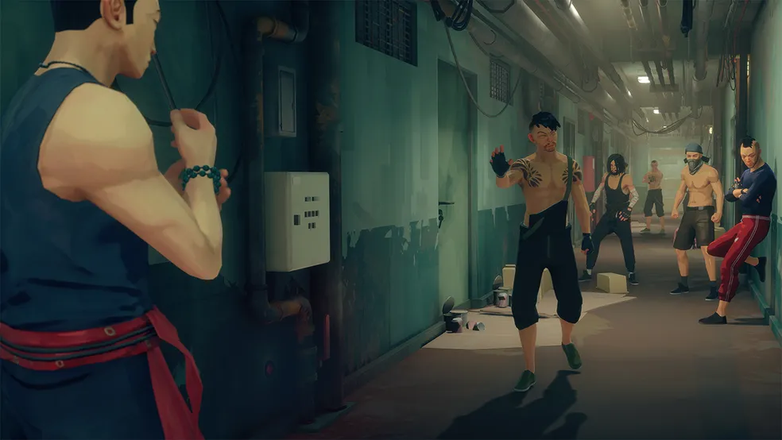
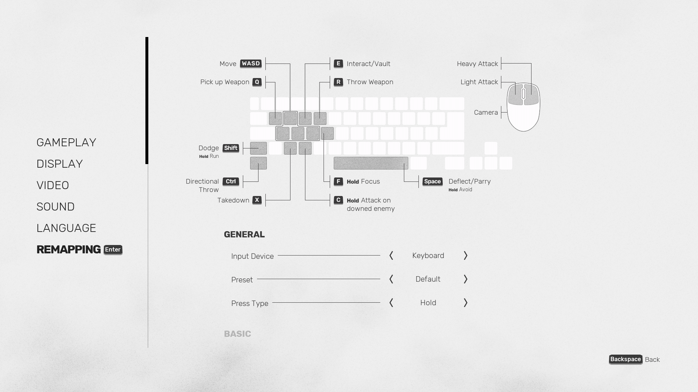
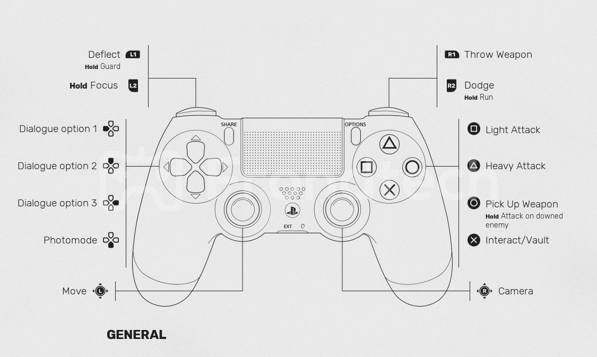

O jogo, inspirado no mestre em artes marciais Pai Mei, inclui mais de 150 ataques únicos. Movimentos básicos de ataque podem ser encadeados, embora alguns combos possam conceder aos jogadores oportunidades táticas adicionais, como derrubar inimigos ou atordoá-los.O protagonista e todos os personagens e inimigos hostis possuem um "medidor estrutural". Quando o medidor estiver completamente cheio, a guarda desses personagens quebrará e eles ficarão vulneráveis a ataques finais.
Os jogadores também podem bloquear ataques, embora isso preencha
gradualmente seu medidor. Alternativamente, os jogadores também podem
evitar ataques ou aparar quando um inimigo está prestes a desferir um
golpe.Um desvio bem-sucedido permite que o jogador atordoe o inimigo
ou jogue-o em uma direção específica.
O jogo permite que os jogadores aproveitem o ambiente e
improvisem novos ataques ou alterem sua estratégia diante de um
oponente mais forte. Por exemplo, o jogador pode chutar um inimigo de
uma borda ou utilizar vários objetos como armas improvisadas. O último
inimigo em uma seção de combate às vezes pode entrar em um estado de
frenesi descontrolado, essencialmente se tornando um minichefe.
Ocasionalmente, o jogador pode ser apresentado a opções de diálogo, o
que pode permitir que ele evite o combate por completo, dependendo de
sua escolha de palavras. Quando o jogador morre no jogo, ele é
magicamente ressuscitado no local onde morre e envelhece vários anos.
À medida que o personagem do jogador envelhece, seus ataques serão
mais poderosos, mas ele terá menos vida. Os jogadores encontrarão
santuários, que serão o local onde eles curam e desbloqueiam novas
habilidades.
Eles também podem visitar o "wuguan", uma escola de kung fu, para
praticar suas habilidades entre os níveis. As habilidades são perdidas
quando o personagem do jogador morre, embora seja possível desbloquear
atualizações permanentementes para que elas fiquem disponíveis no
início de cada partida. À medida que o jogador completa várias
partidas, ele pode acessar o "quadro de detetive", onde as informações
coletadas em diferentes partidas serão armazenadas, e áreas secretas e
atalhos podem se abrir.

